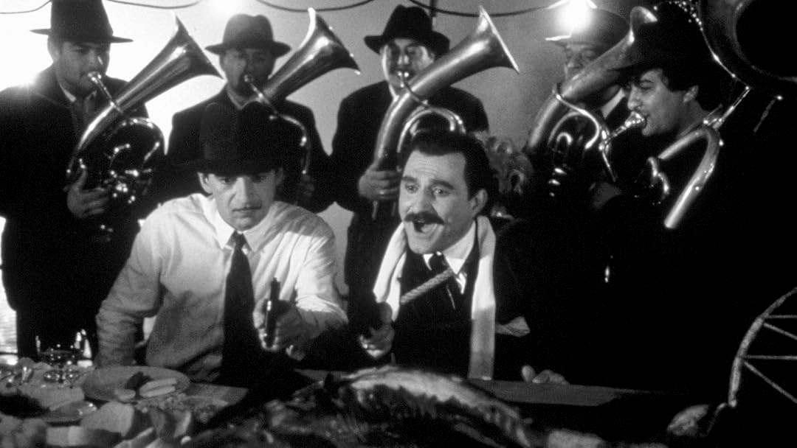

La Ex-Yugoslavia tiene una tradición de cine extensa e importante en la historia; sin embargo en todo lo que fue su historia, era una zona en conflicto constante al ser una federación multiétnica que existe desde 1945, gobernada desde 1953 por Josip Broz Tito, para el occidente un dictador y para el oriente un pacificador, debido a que la mayor parte de esa zona está cubierta por poblaciones con distintas etnias e idiomas, siempre ha habido guerras constantes, sin embargo en la época en la que Tito fue gobernador los conflictos en la zona disminuyeron; el era comunista sin estar asociado a la URSS, el problema de su gobierno surge con que al ser de una ideología socialista, en países sin una economía estable se tiene la tendencia a irse hacia el capitalismo como respuesta para desarrollar su economía, lo cual fue una de las causas de su derrocamiento. Tito reconocía el poder de cine como medio de comunicación masivo, financió el desarrollo de producciones cinematográficas, las veía como un medio de conexión entre los territorios divididos, además de que ayudaría a crear una identidad y narrativa que beneficiara el estado, surgiendo así el “Cine Partisano”, la industria del cine se descentralizó permitiendo que en Bosnia, Croacia, Macedonia, Serbia, etc., se pudiera hacer cine local, lo que les daba visibilidad y un espacio para compartir su cultura.
Después surgió la “Ola negra” representada por, Živojin Pavlović , Aleksandar Petrović, Makavejev, etc., buscaban deshacerse de las ideologías que impregnaban a las películas, hacer algo real, mostrando lo que si pasaba y no se enseñaba, yendo del optimismo al pesimismo en el cine, abordando temas tabú; proponiendo que aunque en el antiguo cine se proponía esta unidad e idealización, lo que ahora se debía de hacer era el mostrar y reconocer los problemas que aún existían. Este movimiento fue visto por el gobierno como oposición y terminó en una “dictadura”, en la que había censura hacia estas películas, terminando con esta nueva ola.
Con el la muerte de Tito y la llegada Slobodan Milošević a la presidencia de Serbia, la paz se terminó; Milos lleva a la Ex-Yugoslavia hacia su fin comenzando con la guerra de los Balcanes, la búsqueda de la independencia y soberanía de las naciones hace que los conflictos estallen en guerras, que llevaron al genocidio de Srebenica en 1995, causado por Milos y sus ideales de limpieza étnica, reconociendo únicamente al pueblo de Serbia dentro de su ideal, provocando la intolerancia hacia musulmanes, cristianos ortodoxos, etc., este periodo ha sido de los genocidios con más muertes después de la segunda guerra mundial, y provocó el Asedio en Sarajevo, uno de los periodos más brutales en la historia de la humanidad.
Milošević, en su periodo de gobierno, entendía al cine de la misma forma que Tito, y se asocio con directores de renombre para crear cine propagandístico, ayudándole a desmeritar el gobierno de Tito, volviendo a todo su gobierno en una dictadura comunista que comparaba con el fascismo, además de usarlo para propagar su ideología.
